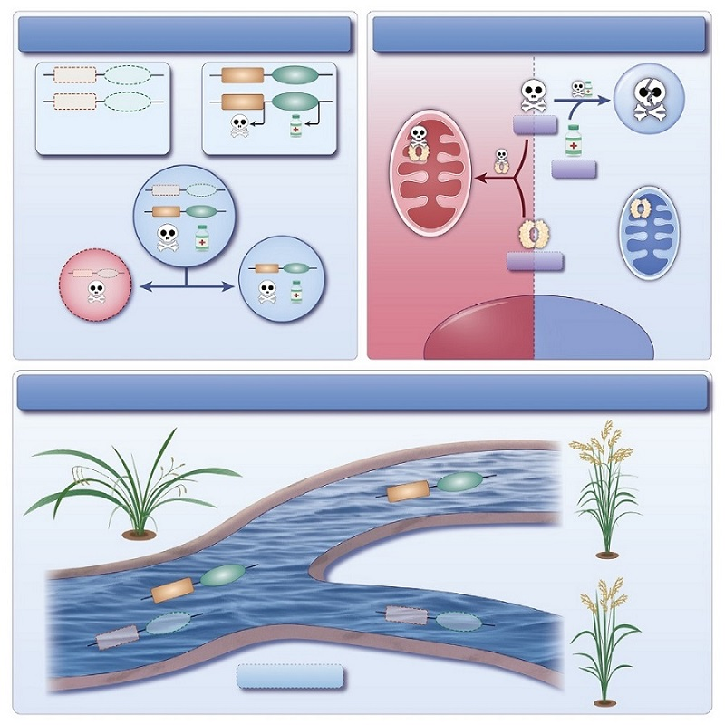

Cell | 籼稻粳稻杂种不育分子机理
水稻（Oryza sativa）是亚洲地区最重要的粮食作物之一，其亚种间的杂交不育问题长期以来限制了杂交优势的利用。籼稻（indica）和粳稻（japonica）作为水稻的两个主要亚种，其杂交后常表现出雄性不育现象，这一现象被认为是物种形成和生殖隔离的重要机制。近年来，研究者们陆续克隆了多个控制水稻杂交不育的基因座，这些基因座通常通过“toxin-antidote”或“killer-protector”的机制发挥作用，但其分子机制仍不完全清楚。
2023 年 8 月，Cell 在线发表了由中国农业科学院和南京农业大学的科研团队合作完成的研究论文，题为“A natural gene drive system confers reproductive isolation in rice”。该研究鉴定并解析了一个新的控制籼粳杂交雄性不育位点 RHS12，揭示了其通过毒素-解毒剂机制驱动生殖隔离的分子机制。
该研究通过 QTL 定位在 12 号染色体上鉴定到一个控制籼粳杂交雄性不育的位点 RHS12。进一步研究发现，RHS12 由两个基因组成，分别是 DUYAO（毒药）和 JIEYAO（解药）。DUYAO 编码一个线粒体靶向蛋白，通过与 OsCOX11 相互作用，触发线粒体功能障碍和细胞毒性，导致雄性配子不育。而 JIEYAO 则编码一个解毒剂，通过与 DUYAO 直接物理相互作用，将其重新定位到自噬体进行讲解，从而解除 DUYAO 的毒性，保护携带 RHS12-i 等位基因的雄配子。这种毒素-解毒剂机制确保携带 RHS12-i 等位基因的胚子优先传递给后代，形成了一个自然的基因驱动系统。

这项研究为解析水稻杂交不育的分子机制提供了重要理论依据，并未利用基因驱动系统进行作物改良和物种形成研究开辟了新的方向。
原文链接